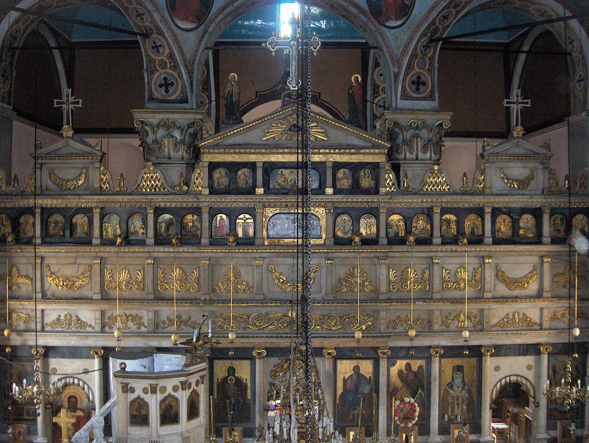
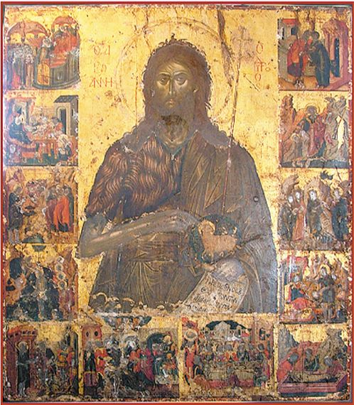
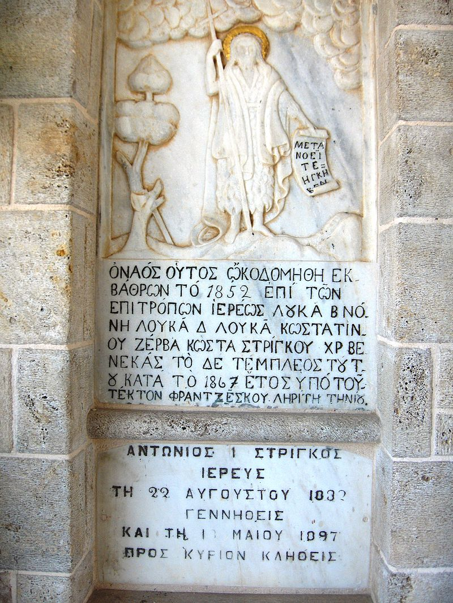

Church of Saint John the Forerunner, Kranidi
The metropolitan church of Saint John the Forerunner[1] is located in Kranidi, Argolis, Peloponnese, Greece, who is the patron and protector of the city.
It has been inextricably linked with the city's history as the current large church of the Holy Forerunner replaced the original church of the Saint, which became the hive where the first inhabitants-founders of Kranidi gathered around. There are no records of when the first church was built, but it was probably one of the many chapels of the neighboring Holy Monastery of Saint Dimitrios of Avgo[2] of Didyma. The small church gave its name to the settlement of Saint John (Ioannis), which, together with Milinda, Villia and Bies, formed the cells of today's Kranidi. The church belonged to the Monohartzi family since 1668, who transferred it to the Community of Kranidi on July 11, 1800.

The agreement for the reconstruction of the Church was signed at the Greek Consulate in Smyrna by the attorney of the owners Kostas Monohartzis and the eminent Italian architect Iakovos Sebastinos, in May 1849 with the following terms:
"The architect is obliged to build the Church from the ground up with the following materials: stone, sand and lime and with the necessary iron to carry out the construction with precision and solidity, and to pave the church yard with local flagstones. He is obliged to finish the church within four years. And the proxy is obliged to advance in front of witnesses to the architect 40 Ottoman lira and after the roof of the Church he will receive the rest from the community of Kranidi."
The church was built 3 years later, in 1852, the marble iconostasis in 1867 by Frajesko Lyritis of the island of Tinos, while all other works were completed in 1873 where the official inauguration took place. Its style is octagonal with a dome. These temples were usually built on the tombs and places of martyrdom of our saints. So this temple is also the "martyrdom" of the citizens of Kranidi, who submit to their Father and Protector every personal thought related to their lives!

The icon of Prodromos was found in 1764 by Leonidas Monohartzis, scion of the Monohartzis family who were also the owners of the small temple of the Holy Forerunner (Timios Prodromos) at the time. He was a bodyguard of the Russian consul in Nafplio and had relations with an Ottoman woman named Hanife. On the night of August 26, 1764, he visited his mistress and as he slept in her house, he had a very vivid dream: He saw a black dog come out from under the bed and attack him. He woke up frightened and when he searched under the bed from where the black dog was coming out, he discovered the imposing and expressive image of the Holy Forerunner that Hanife had hidden there. Immediately, he grabbed the icon and with the ship of a friend from Kranidi, transported it and delivered it to his cousin the holy monk Damianos Monahartzis, abbot of the Holy Monastery of Zoodochos Pigi Koronidos, in the Hermioni Valley. The next day, the Abbot delivered the Holy icon to the privately owned church of Monohartzai's relatives, in Kranidi. That evening there was an all-night celebration with the participation of all the people of Kranidi, where they thanked the saint for coming to their city in such a miraculus manner.
During the Orlov Revolt, with the massacres and destructions of the Turks against the Greeks, the icon of the saint, to be safe, was transferred to the Monastery of Agios Nikolaos in Spetses, for about a year. According to tradition, the people of Spetses asked for the help of the Saint when the Turks were about to destroy their island and indeed, the strong wind that blew did not let the Turkish ships approach the island and thus it was saved from destruction. Out of gratitude, the people of Spetses silver-plated the icon and sent it to its destination with many donations and 800 grosci. The icon was welcomed by the people of Kranidi with joy and emotion on July 22, 1772 in Porto Heli. The Monohartzis family, during the critical years of the Revolution, removed the silver coating of the image and used it for the needs of the Revolutionary Struggle. Later, out of reverence and gratitude towards the Saint, the people of Kranidi placed a new silver coating on the icon, which remains to this day.
Recently, during the conservation work of the icon by the pertinent agency of the Ministry of Culture (2007), it was discovered that the icon painter is the priest Emmanuel Tzanes, who comes from Crete and worked in Corfu and Venice. Many great works have been saved with his signature. The icon of the Holy Forerunner bears his name and the date 1646.

The Saint, as we conclude from all this, miraculously came to the city of Kranidi and settled in the hearts of the faithful. He became their Father and protector, saving according to tradition the city from the terrible cholera epidemic in 1854. The official pan-Argolic Feast of the Saint takes place on August 29, commemoration of the Dissection of his Sacred Head. On August 28th, after the Solemn Vespers, there is an official procession through the streets of Kranidi and August 29th is a holiday for Kranidi, which celebrates its patron and protector.
In the will of Anastasios Monohartzis, the closest heir to the icon, we read:
"One of the most important customs of our ancestors, which we are also obliged to carry out, throughout the evening of the 28th, before midnight, is to carry around the city, the Holy Icon of the Forerunner, so that we will not be unhappy and in danger from any disease. This depends on the leaders of the Church and the local priests. If you want the salvation of our land from the black image of the Forerunner, don't forget this note."
Metropolitan Panteleimon K. Karanikolas: "Kranidi, Fragments of its lost history", Corinth, 1980, pp. 43-45, Μητροπολίτου Παντελεήμονος Κ. Καρανικόλα “Το Κρανίδι, Κομμάτια από τη Χαμένη Ιστορία του”, Κόρινθος, 1980, σ. 43-45